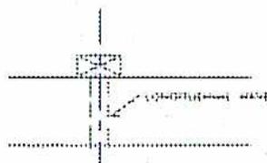
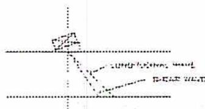
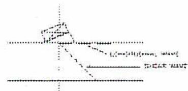

End of Chapter Questions
and Solutions
Chapter 1 Solutions
Thermodynamics of Gases
- 1. A receiver contains \( 1.5 \text{ m}^3 \) of air at \( 860 \text{ kPa} \) and \( 20^\circ\text{C} \) . Calculate the final temperature after \( 2.75 \text{ kg} \) of air is added if the final pressure is \( 1325 \text{ kPa} \) . ( \( R \) for air = \( 0.287 \text{ kJ/kgK} \) )
Initial mass of air, using equation \( pV = mRT \) , is:
$$ pV = mRT $$
$$ mRT = pV $$
$$ m = \frac{pV}{RT} $$
$$ m = \frac{860 \text{ kPa} \times 1.5 \text{ m}^3}{0.287 \text{ kJ/kgK} \times (20 + 273)} $$
$$ m = \frac{1290}{0.287 \text{ kJ/kgK} \times (20 + 273)} $$
$$ m = \frac{1290}{0.287 \text{ kJ/kgK} \times (293)} $$
$$ m = \frac{1290}{0.287 \text{ kJ/kgK} \times 293} $$
$$ m = \frac{1290}{84.09} $$
$$ m = 15.34 \text{ kg} $$
$$ \begin{aligned} \text{Final mass of air} &= 15.34 \text{ kg} + 2.75 \text{ kg} \\ &= 18.09 \text{ kg} \end{aligned} $$
Final temperature of air,
$$ \begin{aligned} pV &= mRT \\ mRT &= pV \\ T &= \frac{pV}{mR} \\ T &= \frac{1325 \text{ kPa} \times 1.5 \text{ m}^3}{18.09 \text{ kg} \times 0.287 \text{ kJ/kgK}} \\ T &= \frac{1987.5}{5.19} \\ T &= 382.95 \text{ K} \\ T &= 382.95 \text{ K} - 273 \\ T &= 109.82^\circ \text{C (Ans.)} \end{aligned} $$
- 2. \( 2 \text{ m}^3 \) volumes of hydrogen at atmospheric pressure in a closed vessel needs to be heated from \( 0^\circ \text{C} \) to \( 21^\circ \text{C} \) . If the specific heat is \( 10\,070 \text{ J/kg}^\circ \text{C} \) , how much heat will be required? ( \( R \) for hydrogen = \( 4.124 \text{ kJ/kgK} \) )
The mass of air is found using the equation \( PV = mRT \) :
$$ \begin{aligned} PV &= mRT \\ mRT &= PV \\ m &= \frac{PV}{RT} \\ m &= \frac{101.325 \text{ kPa} \times 2 \text{ m}^3}{4.124 \text{ kJ/kgK} \times (273 + 0)} \\ m &= \frac{202.65}{4.124 \text{ kJ/kgK} \times 273} \\ m &= \frac{202.65}{1125.85} \\ &= 0.18 \text{ kg} \end{aligned} $$
The amount of heat needed is obtained using equation \( Q = mC_v(T_2 - T_1) \) :
$$ \begin{aligned} Q &= mC_v(T_2 - T_1) \\ &= 0.18 \text{ kg} \times 10\,070 \text{ J/kg}^\circ \text{C} \times (21^\circ \text{C} - 0^\circ \text{C}) \\ &= 0.18 \text{ kg} \times 10\,070 \text{ J/kg}^\circ \text{C} \times 21^\circ \text{C} \\ &= 38064.6 \text{ J} \\ &= 38.06 \text{ kJ (Ans.)} \end{aligned} $$
- 3. A tank with a volume of \( 5 \text{ m}^3 \) is half full of water. The top half of the tank contains \( 2.75 \text{ kg} \) of air at atmospheric pressure. If the partial pressure of water is \( 7.3814 \text{ kPa} \) , what is the temperature of the air in the tank? ( \( R \) for air = \( 0.287 \text{ kJ/kgK} \) )
The volume of gas above the water is a mixture of air and water vapour. Because the partial pressure of the water vapour is \( 7.3814 \text{ kPa} \) , the partial pressure of the air is:
$$ \begin{aligned} P_{\text{air}} &= P_{\text{total}} - P_{\text{water}} \\ &= 101.325 \text{ kPa} - 7.3814 \text{ kPa} \\ &= 93.94 \text{ kPa} \end{aligned} $$
Since the partial pressure always refers to the total volume, the volume is \( 2.5 \text{ m}^3 \)
The temperature of the air is calculated using the equation \( PV = mRT \) :
$$ \begin{aligned} PV &= mRT \\ mRT &= PV \\ T &= \frac{PV}{mR} \\ T &= \frac{93.94 \text{ kPa} \times 2.5 \text{ m}^3}{0.287 \text{ kJ/kgK} \times 2.75 \text{ kg}} \\ T &= \frac{234.85}{0.7893} \\ T &= 297.54 \text{ K} \\ T &= 297.54 \text{ K} - 273 \\ T &= 24.54^\circ\text{C} \text{ (Ans.)} \end{aligned} $$
- 4. The values of the specific heats of a gas at constant pressure and at constant volume are \( 0.9839 \) and \( 0.7285 \) , respectively. Find the value of \( \gamma \) for this gas. If \( 1.8 \text{ kg} \) of this gas is heated from \( 16^\circ\text{C} \) to \( 155^\circ\text{C} \) , find the heat absorbed if the heating takes place at
-
- Constant pressure
- Constant volume.
\( \gamma \) for any gas is the ratio of specific heats
$$ \begin{aligned} \gamma &= \frac{C_p}{C_v} \\ \gamma &= \frac{0.9839}{0.7285} \\ \gamma &= 1.35 \text{ (Ans.)} \end{aligned} $$(1) Heat absorbed at Constant Pressure:
$$ \begin{aligned} &= m C_p (T_2 - T_1) \text{ kJ} \\ &= 1.8\text{kg} \times 0.9839 (155^\circ\text{C}-16^\circ\text{C}) \\ &= 1.8\text{kg} \times 0.9839 \times 139^\circ\text{C} \\ &= 246.17 \text{ kJ (Ans.)} \end{aligned} $$
(2) Heat absorbed at Constant Volume:
$$ \begin{aligned} &= m C_v (T_2 - T_1) \text{ kJ} \\ &= 1.8\text{kg} \times 0.7285 \times (155^\circ\text{C}-16^\circ\text{C}) \\ &= 1.8\text{kg} \times 0.7285 \times 139^\circ\text{C} \\ &= 182.27 \text{ kJ (Ans.)} \end{aligned} $$
5. With respect to compression and expansion processes, define the following:
- (a) Isothermal process
- (b) Adiabatic process
- (c) Polytropic process
- a) An isothermal process is one that occurs at constant temperature.
- b) An adiabatic process is one where no heat is added or subtracted from the working fluid.
- c) A polytropic process is one where some heat is added or subtracted from the working fluid.
6. \( 100 \text{ m}^3 \) of a perfect gas at atmospheric pressure and a temperature of \( 21^\circ\text{C} \) is compressed to \( 25 \text{ m}^3 \) . What work is required if the gas is compressed:
- a) Isothermally
- b) Adiabatically (Assume \( \gamma = 1.32 \) )
- c) Polytropically (Assume \( n = 1.18 \) )
- a) Since the two volumes are known, the work at constant temperature is calculated using equation \( W = P_1 V_1 \ln \frac{V_2}{V_1} \) :
$$ W = P_1 V_1 \ln \frac{V_2}{V_1} $$
$$ W = 101.325 \text{ kPa} \times 100 \text{ m}^3 \times \ln \frac{100 \text{ m}^3}{25 \text{ m}^3} $$
$$ W = 101.325 \text{ kPa} \times 100 \text{ m}^3 \times \ln 4 \text{ m}^3 $$
$$ W = 10132.5 \times 1.3863 $$
Isothermal compression = 14 046.63 kNm or kJ (Ans.)
b) Pressure \( P_2 \) can be calculated from the equation \( P_1 V_1^\gamma = P_2 V_2^\gamma \) :
$$ P_1 V_1^\gamma = P_2 V_2^\gamma $$
$$ P_2 = \frac{P_1 V_1^\gamma}{V_2^\gamma} $$
$$ = \frac{101.325 \text{ kPa} \times 100 \text{ m}^3{}^{1.32}}{25 \text{ m}^3{}^{1.32}} $$
$$ = \frac{101.325 \text{ kPa} \times 436.52 \text{ m}^3}{70.03 \text{ m}^3} $$
$$ = \frac{44230.39}{70.03} $$
$$ = 631.6 \text{ kPa (abs.)} $$
The work is calculated from the equation
$$ W = \frac{P_1 V_1 - P_2 V_2}{\gamma - 1} $$
$$ W = \frac{(101.325 \text{ kPa} \times 100 \text{ m}^3) - (631.6 \text{ kPa} \times 25 \text{ m}^3)}{1.32 - 1} $$
$$ W = \frac{(10132.5) - (15790)}{0.32} $$
$$ W = \frac{-5657.50}{0.32} $$
Adiabatic compression = 17,680 kJ (Ans.)
c) Pressure \( P_2 \) is calculated using the equation \( P_1V_1^n = P_2V_2^n \) :
$$ \begin{aligned}P_1V_1^n &= P_2V_2^n \\P_2V_2^n &= P_1V_1^n \\P_2 &= \frac{P_1V_1^n}{V_2^n} \\P_2 &= \frac{101.325 \text{ kPa} \times 100 \text{ m}^3{}^{1.18}}{25 \text{ m}^3{}^{1.18}} \\P_2 &= \frac{101.325 \text{ kPa} \times 229.09}{44.62} \\P_2 &= \frac{23212.54}{44.62} \\P_2 &= 520.23 \text{ kPa (abs)}\end{aligned} $$
The work is calculated from the equation \( W = \frac{P_1V_1 - P_2V_2}{n-1} \) :
$$ \begin{aligned}W &= \frac{P_1V_1 - P_2V_2}{n-1} \\W &= \frac{(101.325 \text{ kPa} \times 100 \text{ m}^3) - (520.23 \text{ kPa} \times 25 \text{ m}^3)}{1.18-1} \\W &= \frac{10132.5 - 13005.75}{0.18} \\W &= \frac{-2873.25}{0.18}\end{aligned} $$
Polytropic compression = 15962.5 kJ (Ans.)
Chapter 2 Solutions
Thermodynamics of Steam
1. Define the following:
- a) Sensible heat
- b) Latent heat
- c) Superheat
a) Sensible heat is the heat added to water before the boiling point.
b) Latent heat is the heat added between the boiling point and the point where all water has been converted to steam. The temperature is constant during this phase.
c) Superheat is the heat added to steam with no more moisture content. Superheat results in an increase in both pressure and temperature.
2. What is the enthalpy of 1 kg of steam at 2000 kPa:
- (a) when dry and saturated
- (b) when 0.96 dry
- (c) when superheated by 85°C
(a) Enthalpy of dry and saturated steam at 2000 kPa = 2799.5 kJ/kg.
(b) Specific enthalpy of 96% dry steam:
$$ h = h_f + xh_{fg} $$
$$ h = 908.79 + 0.96 \times 1890.7 $$
$$ h = 908.79 + 1815.07 $$
$$ h = 2723.86 \text{ kJ/kg (Ans.)} $$
(c) Saturation temperature of steam:
$$ 2000 \text{ kPa} = 212.42^\circ\text{C} $$
Superheated steam temperature = Saturation temperature + Degrees of superheat
Superheated steam temperature = \( 212.42^\circ\text{C} + 85^\circ\text{C} \)
Superheated steam temperature = \( 297.42^\circ\text{C} \)
Specific enthalpy of superheated steam at 297.42°C:
$$ h \text{ at } 297.42^\circ\text{C} = h \text{ at } 250^\circ\text{C} + \frac{47.42}{50} (h \text{ at } 300^\circ\text{C} - h \text{ at } 250^\circ\text{C}) $$
$$ h \text{ at } 297.42^\circ\text{C} = 2902.5 + \frac{47.42}{50} (3023.5 - 2902.5) $$
$$ h \text{ at } 297.42^\circ\text{C} = 2902.5 + \frac{47.42}{50} (121) $$
$$ h \text{ at } 297.42^\circ\text{C} = 2902.5 + 0.9484(121) $$
$$ h \text{ at } 297.42^\circ\text{C} = 2902.5 + 114.76 $$
$$ h \text{ at } 297.42^\circ\text{C} = 3017.26 \text{ kJ/kg (Ans.)} $$
- 3. Describe the principle of a throttling calorimeter and explain why a separating calorimeter sometimes has to be added.
The principle of the throttling calorimeter is that when steam pressure is reduced through an orifice or constriction, the enthalpy remains the same since there is no opportunity for the heat to be removed. If the steam has a moderate amount of moisture in it, the wet steam is converted, or flashed, to superheated steam at a lower pressure. The process is isenthalpic, which means that there is no change in enthalpy.
If the moisture content in the steam is too high, a separating calorimeter must be used to knock out most of the moisture before the remaining steam is passed to a throttling calorimeter.
- 4. A combination separating and throttling calorimeter is connected to a main steam header. The following data is collected:
- Steam pressure – 2410 kPa
- Amount of water collected in the separating calorimeter – 0.87 kg
- Amount of condensate after the throttling separator – 12.5 k
- Pressure of the steam in throttling calorimeter – 185 kPa
- Temperature of steam in throttling calorimeter - 135°C
Taking the specific heat of the throttled superheated steam as 2.25 kJ/kgK, calculate the main steam line dryness fraction.
Steam conditions for 2410 kPa
\(
h_f = 952.89 \text{ kJ/kg}
\)
\(
h_{fg} = 1849.71 \text{ kJ/kg}
\)
\( h_f \) for a pressure of 2410 kPa:
$$ \begin{aligned} h_f \text{ at 2410 kPa} &= h_f \text{ at 2250 kPa} + \frac{160}{250}(h_f \text{ at 2500 kPa} - h_f \text{ at 2250 kPa}) \\ &= 936.49 \text{ kJ/kg} + \frac{160}{250}(962.11 - 936.49) \text{ kJ/kg} \\ &= 936.49 \text{ kJ/kg} + \frac{160}{250}(25.62) \text{ kJ/kg} \\ &= 936.49 \text{ kJ/kg} + 0.64(25.62) \text{ kJ/kg} \\ &= 936.49 \text{ kJ/kg} + 16.40 \text{ kJ/kg} \\ &= 952.89 \text{ kJ/kg} \end{aligned} $$
\( h_{fg} \) for a pressure of 2410 kPa:
$$ \begin{aligned} h_{fg} \text{ at 2410 kPa} &= h_{fg} \text{ at 2250 kPa} + \frac{160}{250}(h_{fg} \text{ at 2500 kPa} - h_{fg} \text{ at 2250 kPa}) \\ &= 1865.2 \text{ kJ/kg} + \frac{160}{250}(1841.0 - 1865.2) \text{ kJ/kg} \\ &= 1865.2 \text{ kJ/kg} + \frac{160}{250}(-24.2) \text{ kJ/kg} \\ &= 1865.2 \text{ kJ/kg} + 0.64(-24.2) \text{ kJ/kg} \\ &= 1865.2 \text{ kJ/kg} - 15.49 \text{ kJ/kg} \\ &= 1849.71 \text{ kJ/kg} \end{aligned} $$
Steam conditions for 185 kPa
steam temp. = 117.73°C
$$ h_g = 2703.04 \text{ kJ/kg} $$
Steam temp. ( \( t_s \) ) for a pressure of 185 kPa:
$$ \begin{aligned} t_s \text{ at } 185 \text{ kPa} &= t_s \text{ at } 175 \text{ kPa} + \frac{10}{25}(t_s \text{ at } 200 \text{ kPa} - t_s \text{ at } 175 \text{ kPa}) \\ &= 116.06^\circ\text{C} + \frac{10}{25}(120.23 - 116.06)^\circ\text{C} \\ &= 116.06^\circ\text{C} + \frac{10}{25}(4.17)^\circ\text{C} \\ &= 116.06^\circ\text{C} + 0.4(4.17)^\circ\text{C} \\ &= 116.06^\circ\text{C} + 1.67^\circ\text{C} \\ &= 117.73^\circ\text{C} \end{aligned} $$
\( h_g \) for a pressure of 185 kPa:
$$ \begin{aligned} h_g \text{ at } 185 \text{ kPa} &= h_g \text{ at } 175 \text{ kPa} + \frac{10}{25}(h_g \text{ at } 200 \text{ kPa} - h_g \text{ at } 175 \text{ kPa}) \\ &= 2700.6 \text{ kJ/kg} + \frac{10}{25}(2706.7 - 2700.6) \text{ kJ/kg} \\ &= 2700.6 \text{ kJ/kg} + \frac{10}{25}(6.1) \text{ kJ/kg} \\ &= 2700.6 \text{ kJ/kg} + 0.4(6.1) \text{ kJ/kg} \\ &= 2700.6 \text{ kJ/kg} + 2.44 \text{ kJ/kg} \\ &= 2703.04 \text{ kJ/kg} \end{aligned} $$
Dryness fraction by the separator:
$$ \begin{aligned} x_1 &= \frac{m_2}{m_2 + m_1} \\ x_1 &= \frac{12.5 \text{ kg}}{12.5 \text{ kg} + 0.87} \\ x_1 &= \frac{12.5 \text{ kg}}{13.37 \text{ kg}} \\ x_1 &= 0.9349 \end{aligned} $$
Dryness fraction by the throttling calorimeter:
Enthalpy before throttling = Enthalpy after
$$ 952.89 \text{ kJ/kg} + x_2 \times 1849.71 \text{ kJ/kg} = 2703.04 \text{ kJ/kg} + 2.25 \text{ kJ/kgK} (135^\circ\text{C} - 117.73^\circ\text{C}) $$
$$ 952.89 \text{ kJ/kg} + x_2 \times 1849.71 \text{ kJ/kg} = 2703.04 \text{ kJ/kg} + 2.25 \text{ kJ/kgK} (17.27^\circ\text{C}) $$
$$ 952.89 \text{ kJ/kg} + x_2 \times 1849.71 \text{ kJ/kg} = 2703.04 \text{ kJ/kg} + 38.86^\circ\text{C} $$
$$ x_2 = \frac{2703.04 \text{ kJ/kg} + 38.86^\circ\text{C} - 952.89 \text{ kJ/kg}}{1849.71 \text{ kJ/kg}} $$
$$ x_2 = \frac{1789.01 \text{ kJ/kg}}{1849.71 \text{ kJ/kg}} $$
$$ x_2 = 0.9672 $$
Dryness fraction of the main steam header:
$$ x = x_1 \times x_2 $$
$$ x = 0.9349 \times 0.9672 $$
$$ x = \mathbf{0.9042} \text{ (Ans.)} $$
- 5. One kilogram of steam at a pressure of 100 kPa and 40 percent dry, receives heat under constant volume raising the pressure to 250 kPa absolute.
Calculate the following:
- (a) Volume of the steam
- (b) Quality of the steam at the end of the process
- (c) Work done
- (d) Change in internal energy
| 100 kPa | \( v_{g1} = 1.694 \text{ m}^3/\text{kg} \) | \( h_{f1} = 417.46 \text{ kJ} \) | \( h_{fg2} = 2258 \text{ kJ} \) |
| 250 kPa | \( v_{g2} = 0.7187 \text{ m}^3/\text{kg} \) | \( h_{f2} = 535.37 \text{ kJ} \) | \( h_{fg2} = 2181.5 \text{ kJ} \) |
- (a) Since the steam is 40 percent dry, its volume at the beginning of the process will be:
$$ 0.40 \times 1.694 = \mathbf{0.6776 \text{ m}^3} \text{ (Ans.)} $$
- (b) Quality of \( x_2 \) of the steam at the end of the process:
$$ x_2 = \frac{0.6776 \text{ m}^3/\text{kg}}{0.7187 \text{ m}^3/\text{kg}} $$
$$ x_2 = \mathbf{0.9428} \text{ (Ans.)} $$
(c) Since the steam is at a constant volume, the work done during the process:
$$ WD = 0 \text{ (Ans.)} $$
d) Heat required:
$$ Q = u_2 - u_1 + WD $$
$$ Q = u_2 - u_1 + 0 $$
$$ Q = u_2 - u_1 $$
Find the values of \( u_1 \) and \( u_2 \) :
$$ h = u + pv $$
$$ u = h - pv $$
Internal energy at the end of the process:
$$ u_2 = h_2 - p_2 v_2 $$
$$ \text{But } h_2 = h_{f2} + x_2 h_{fg2} $$
$$ h_2 = 535.37 + 0.9428 \times 2181.5 $$
$$ h_2 = 535.37 + 2056.72 $$
$$ h_2 = 2592.09 \text{ kJ/kgK} $$
$$ p_2 v_2 = 250 \times 0.6776 $$
$$ p_2 v_2 = 169.40 \text{ kJ/kgK} $$
$$ u_2 = h_2 - p_2 v_2 $$
$$ u_2 = 2592.09 \text{ kJ/kgK} - 169.40 \text{ kJ/kgK} $$
$$ u_2 = 2422.69 \text{ kJ/kgK} $$
Internal energy at the beginning of the process:
$$ u_1 = h_1 - p_1 v_1 $$
$$ \text{But } h_1 = h_{f1} + x_1 h_{fg1} $$
$$ h_1 = 417.46 + 0.4 \times 2258 $$
$$ h_1 = 417.46 + 903.20 $$
$$ h_1 = 1320.66 \text{ kJ/kgK} $$
$$ p_1 v_1 = 100 \times 0.6776 $$
$$ p_1 v_1 = 67.76 \text{ kJ/kgK} $$
$$ u_1 = h_1 - p_1 v_1 $$
$$ u_1 = 1320.66 \text{ kJ/kgK} - 67.76 \text{ kJ/kgK} $$
$$ u_1 = 1252.90 \text{ kJ/kgK} $$
Change in internal energy:
$$ Q = u_2 - u_1 $$
$$ Q = 2422.69 \text{ kJ/kgK} - 1252.90 \text{ kJ/kgK} $$
$$ Q = 1169.79 \text{ kJ/kgK} \text{ (Ans.)} $$
- 6. \( 0.6 \text{ m}^3 \) of nitrogen is contained in a cylinder at \( 105 \text{ kPa} \) and \( 22^\circ\text{C} \) . The gas is then compressed isothermally until the pressure is \( 3600 \text{ kPa} \) . Calculate the change in entropy. ( \( R \) for nitrogen = \( 297 \text{ Nm/kgK} \) )
$$ pV = mRT $$
$$ mRT = pV $$
$$ mRT = \frac{pV}{RT} $$
$$ m = \frac{pV}{RT} $$
$$ m = \frac{105 \times 10^2 \times 0.6 \text{ m}^3}{297 \text{ Nm/kgK} \times (22^\circ\text{C} + 273)} $$
$$ m = \frac{6300}{297 \text{ Nm/kgK} \times (295)} $$
$$ m = \frac{6300}{87615} $$
$$ m = 0.0719 \text{ kg} $$
$$ s_2 - s_1 = mR \ln \left( \frac{P_1}{P_2} \right) $$
$$ s_2 - s_1 = \frac{0.0719 \text{ kg} \times 297 \text{ Nm/kgK}}{10^3} \left[ \ln \left( \frac{105 \text{ kPa}}{3600 \text{ kPa}} \right) \right] $$
$$ s_2 - s_1 = -\frac{0.0719 \text{ kg} \times 297 \text{ Nm/kgK}}{10^3} \left[ \ln \left( \frac{3600 \text{ kPa}}{105 \text{ kPa}} \right) \right] $$
$$ s_2 - s_1 = -\frac{0.0719 \text{ kg} \times 297 \text{ Nm/kgK}}{10^3} \left[ \ln (34.2857 \text{ kPa}) \right] $$
$$ s_2 - s_1 = -0.0214 \times 3.5347 $$
$$ s_2 - s_1 = -0.0756 $$
Decrease in entropy \( s_1 - s_2 = 0.0756 \text{ kJ/K} \) (Ans.)
- 7. Steam with a dryness of 0.97 is throttled from a pressure of 800 kPa. Using the Mollier Chart, what does the final pressure need to be for the steam to be dry and saturated? What are the enthalpies and entropies for these two points?
The starting point is found at the intersection of the pressure of 800 kPa and dryness of 0.97. From the Mollier Chart, the enthalpy is estimated as 2705 kJ/kg and the entropy as 6.51 kJ/kgK. We then follow a horizontal line until we come to the saturation line. The pressure is approximately 200 kPa with the same enthalpy and an entropy of 7.12 kJ/kgK
- 8. A boiler is fed with water at a temperature of 40°C and produces 2360 kg of steam per hour at a pressure of 1750 kPa and a temperature of 250°C. Heat losses are 40% of the heat supplied and the heating value of the fuel is 31 400 kJ/kg. What is the fuel flow required?
Saturation temperature of 1750 kPa steam = 205.76°C, therefore, the steam is superheated.
\( h \) of superheated steam with a pressure of 1750 kPa and 250 °C:
$$ \begin{aligned} h \text{ at } 1750 \text{ kPa} &= h \text{ at } 2000 \text{ kPa} + \frac{750}{1000} (h \text{ at } 2000 \text{ kPa} - h \text{ at } 1000 \text{ kPa}) \\ &= 2902.5 \text{ kJ/kg} + 0.75 (2902.5 - 2942.6) \text{ kJ/kg} \\ &= 2902.5 \text{ kJ/kg} + 0.75 (-40.10) \text{ kJ/kg} \\ &= 2902.5 \text{ kJ/kg} + (-30.075) \text{ kJ/kg} \\ &= 2902.5 \text{ kJ/kg} - 30.075 \text{ kJ/kg} \\ &= 2872.43 \text{ kJ/kg} \end{aligned} $$
Enthalpy of the feed water at 40°C = 167.57 kJ/kg
With heat losses of 40%, the boiler efficiency is 60%.
Fuel flow required:
$$ E_b = \frac{m_s(h_1 - h_w)}{m_f HV_f} $$
$$ E_b m_f HV_f = m_s(h_1 - h_w) $$
$$ m_f = \frac{m_s(h_1 - h_w)}{E_b HV_f} $$
$$ m_f = \frac{2360 \text{ kg/hr}(2872.43 \text{ kJ/kg} - 167.57 \text{ kJ/kg})}{0.6 \times 31\,400 \text{ kJ/kg}} $$
$$ m_f = \frac{2360 \text{ kg/hr} \times 2704.86 \text{ kJ/kg}}{0.6 \times 31\,400 \text{ kJ/kg}} $$
$$ m_f = \frac{6\,383\,469.6 \text{ kg/hr}}{19\,840.00 \text{ kJ/kg}} $$
Fuel flow required = 321.75 kg/hr (Ans.)
Chapter 3 Solutions
Practical Thermodynamic Cycles
1. List the three components in every heat engine.
Every heat engine has three components:
- 1. A high temperature heat source usually obtained by combustion of a fuel
- 2. A cyclic process that acts on a working fluid
- 3. A low temperature heat sink to which heat is rejected
2. With the aid of a simple sketch, describe the operation of an engine based on the Carnot cycle.
In considering this ideal engine, as shown in Fig. 3, imagine a cylinder and piston which are perfect non-conductors and frictionless. Let the cylinder cover be a perfect conductor in which the heat is added or removed through the cylinder cover.
At point a the hot body, A at temperature \( T_1 \) having infinite capacity for supplying heat, is placed in contact with the cover of the cylinder which contains 1 kilogram of a perfect gas at temperature \( T_1 \) , volume \( V_a \) and pressure \( P_a \) . The piston is allowed to move slowly so that isothermal expansion takes place at temperature \( T_1 \) . The gas does work during the expansion from \( P_a V_a \) to \( P_b V_b \) and must take in an amount of heat equivalent to the work done.
Remove the hot body A and replace with a perfect nonconducting cover B and then allow the piston to go on moving right. Since no heat can be taken in or rejected under these conditions, the gas expands adiabatically doing work at the expense of its internal energy and its temperature falls.
Let this adiabatic expansion go on until the temperature is \( T_2 \) and let the pressure be \( P_c \) and the volume \( V_c \) .
Remove the nonconducting cover B and apply C , a body which is capable of taking up any amount of heat, and let this body remain at some constant temperature \( T_2 \) which is lower than \( T_1 \) . Now force the piston back slowly and the gas will be compressed isothermally at \( T_2 \) . Work is done on the gas and the heat equivalent of this work is rejected to C . Let this isothermal compression be continued until a certain point is reached such that if the fourth operation is carried out adiabatically from this point, the cycle will be completed and the diagram closed.
Now remove the body C and again apply the nonconducting cover B . Continue the compression which will now be adiabatic. The pressure and temperature will rise and if the point d has been properly chosen, when the pressure comes back to its
original value \( P_a \) , the volume will be the original \( V_a \) , and the temperature will have risen to its original value \( T_1 \) . In other words, the third operation must be stopped at a point so that an adiabatic line drawn through this point will reach the original point.
![Diagram of a Carnot cycle. The top part shows a cylinder with a piston, flanked by a 'Hot Body T1' and a 'Cold Body T2' separated by a 'Non-Conductor'. Arrows indicate 'Expansion' (outward) and 'Compression' (inward). The bottom part is a Pressure (P) vs. Volume (V) graph. It shows a closed cycle with four points: 'a' (top-left), 'b' (top-right), 'c' (bottom-right), and 'd' (bottom-left). The path from 'a' to 'b' is labeled 'Isothermal PV - Const.'. The path from 'b' to 'c' is labeled 'Adiabatic PV^gamma = Const.'. The path from 'c' to 'd' is labeled 'Isothermal PV - Const.'. The path from 'd' to 'a' is labeled 'Adiabatic PV^gamma = Const.'. Vertical dashed lines connect the cylinder's piston position to the graph's volume axis at points a, b, c, and d.](8ccbc9fa77bf60ba0ca0b79dec8681b8_img.jpg)
3. With the aid of a PV diagram, describe the various stages of a steam turbine operating on the Rankine cycle.
Stage 1 to 2 - The boiler receives the working substance as a compressed liquid at point 1 at the pressure \( P_1 \) . Heat is added in the boiler and the liquid temperature rises until saturation point is reached. As further heat is added the liquid evaporates, at constant pressure and temperature, until it leaves the boiler as a dry saturated vapour at point \( b \) .
Stage 2 to 3 - This stage is an adiabatic expansion, taking place in the prime mover in a similar manner to the corresponding Carnot stage.
- Stage 3 to 4 - This is the heat rejection process, carried out at constant pressure until the working substance leaves the condenser as a liquid at pressure \( P_2 \) at point \( d \) .
- Stage 4 to 1 - This stage is an adiabatic compression to return the fluid to the original condition at point \( a \) . This can be more easily achieved in a practical plant than the comparable Carnot stage. The compression takes place in a feedwater pump with very little heat addition; the majority of the heat supplied from the feed heaters will be at a point following the feedwater pump, that is, after the fluid has reached its \( P_1 \) pressure again.
![A Pressure-Volume (P-V) diagram illustrating a thermodynamic cycle. The vertical axis is labeled 'Pressure P' and the horizontal axis is labeled 'Volume V'. The cycle consists of four points: 1, 2, 3, and 4. Point 1 is at the top left, point 2 is at the top right, point 3 is at the bottom right, and point 4 is at the bottom left. A horizontal line connects points 1 and 2, with an arrow pointing to it labeled 'Heat Supplied at Top Pressure'. A curved line connects points 2 and 3, labeled 'Adiabatic Expansion'. A horizontal line connects points 3 and 4, with an arrow pointing to it labeled 'Heat Rejected at Bottom Pressure'. A vertical line connects points 4 and 1. The area under the curve 1-2-3-4 is shaded with diagonal lines.](3ae74a33759ae31781f484406db4feed_img.jpg)
- 4. An electricity generating station operates with boiler stop valve steam conditions of 3000 kPa and 370°C and maintains a condenser back pressure of 5 kPa. Steam exhausts from the turbine with 15% wetness and the boiler feed water returns at 140°C. Calculate the following:
- Carnot efficiency
- Rankine efficiency.
- Carnot efficiency:
$$ \begin{aligned}\eta &= 1 - \frac{T_2}{T_1} \\ \eta &= 1 - \frac{140 + 273}{370 + 273} \\ \eta &= 1 - \frac{413}{643} \\ \eta &= 1 - 0.6423 \\ \eta &= 0.3577 \\ \eta &= 35.77\% \text{ (Ans.)}\end{aligned} $$
- Rankine efficiency.
Enthalpy of superheated steam at 3000 kPa and 370°C:
$$ \begin{aligned}&= \text{Enthalpy at } 300^\circ\text{C} + \frac{70}{100} (\text{Enthalpy at } 400^\circ\text{C} - \text{Enthalpy at } 300^\circ\text{C}) \\ &= 2993.5 \text{ kJ/kgK} + \frac{70}{100} (3230.9 \text{ kJ/kgK} - 2993.5 \text{ kJ/kgK}) \\ &= 2993.5 \text{ kJ/kgK} + \frac{70}{100} (237.40 \text{ kJ/kgK}) \\ &= 2993.5 \text{ kJ/kgK} + 166.18 \text{ kJ/kgK} \\ &= 3159.68 \text{ kJ/kgK}\end{aligned} $$
Conditions for 5 kPa dry saturated steam:
$$ h_f = 137.82 \text{ kJ/kgK} \quad h_{fg} = 2423.7 \text{ kJ/kgK} $$
Enthalpy of the 5 kPa wet saturated steam:
$$ \begin{aligned} &= h_f + xh_{fg} \\ &= 137.82 \text{ kJ/kgK} + 0.85(2423.7 \text{ kJ/kgK}) \\ &= 137.82 \text{ kJ/kgK} + 2060.15 \text{ kJ/kgK} \\ &= 2197.97 \text{ kJ/kgK} \end{aligned} $$
Enthalpy of the 5 kPa condensed steam:
137.82 kJ/kg.
Rankine efficiency is:
$$ \begin{aligned} \eta &= \frac{h_2 - h_3}{h_2 - h_f} \\ \eta &= \frac{3159.68 - 2197.97}{3159.68 - 137.82} \\ \eta &= \frac{961.71}{3021.88} \\ \eta &= 31.82\% \text{ (Ans.)} \end{aligned} $$
- 5. Describe the main differences between the Otto and Diesel cycles. What practical limits are there with respect to their efficiencies?
The Otto cycle operates with both heat supplied and heat rejected occurring at constant volume. The important aspect of the Diesel cycle is that the addition of heat is done at constant pressure.
Internal combustion engines operating on the Otto cycle typically run with a compression ratio with a maximum of about 10:1 to prevent pre-ignition of the air and fuel mixture. Since compression for a diesel engine is on air only, there is not the same restriction on compression ratio as the Otto engine. Although the Otto cycle is more efficient for the same compression ratio, it is the fact that the Diesel engine can operate at substantially higher compression ratios that makes it more efficient. Mechanical considerations do limit diesels to a maximum compression ratio of approximately 25:1.
- 6. Calculate the air standard efficiency of a Diesel engine with a compression ratio of 15:1. The temperature at the start of compression is 20°C and, after combustion, it has reached 1200°C. Use a specific heat of 1.4.
Temperature after compression:
$$ \begin{aligned} T_2 &= T_1 r_v^{\gamma-1} \\ T_2 &= (20^\circ\text{C} + 273) \times 15^{1.4-1} \\ T_2 &= 293 \text{ K} \times 15^{0.4} \\ T_2 &= 293 \text{ K} \times 2.9542 \\ T_2 &= 865.6 \text{ K} \end{aligned} $$
Calculation of cut-off ratio:
$$ \begin{aligned} R &= \frac{T_3}{T_2} \\ R &= \frac{1200^\circ\text{C} + 273}{865.6 \text{ K}} \\ R &= \frac{1473 \text{ K}}{865.6 \text{ K}} \\ R &= 1.7017 \end{aligned} $$
Therefore, the air standard efficiency is:
$$ \begin{aligned} \eta &= 1 - \frac{(R^\gamma - 1)}{\gamma r_v^{\gamma-1} (R - 1)} \\ \eta &= 1 - \frac{(1.7017^{1.4} - 1)}{1.4 \times 15^{1.4-1} (1.7017 - 1)} \\ \eta &= 1 - \frac{(2.1049 - 1)}{1.4 \times 15^{0.4} (0.7017)} \\ \eta &= 1 - \frac{1.1049}{1.4 \times 2.9542 (0.7017)} \\ \eta &= 1 - \frac{1.1049}{1.4 \times 2.0729} \\ \eta &= 1 - \frac{1.1049}{2.9021} \\ \eta &= 1 - 0.3807 \\ \eta &= 0.6193 \\ \eta &= \mathbf{61.93\% \text{ (Ans.)}} \end{aligned} $$
- 7. Air enters the inlet of a gas turbine operating on the ideal constant pressure cycle at a temperature of \( 22^{\circ}\text{C} \) and 103.25 kPa. The pressure of the air at the discharge of the compressor is 600 kPa. If the temperature of the air at the turbine inlet is \( 745^{\circ}\text{C} \) , calculate the following:
-
- Temperature at the end of compression
- Temperature at the turbine exit
- Ideal thermal efficiency
Use a specific heat of 1.4.
Conditions:
$$ p_1 = 103.25 \text{ kPa} $$
$$ T_1 = 22^{\circ}\text{C} + 273 $$
$$ T_1 = 295 \text{ K} $$
$$ p_2 = 600 \text{ kPa} $$
$$ T_2 = ? $$
$$ T_3 = 745^{\circ}\text{C} + 273 $$
$$ T_3 = 1018 \text{ K} $$
$$ T_4 = ? $$
Pressure ratio:
$$ r_p = \frac{P_2}{P_1} $$
$$ r_p = \frac{600 \text{ kPa}}{103.25 \text{ kPa}} $$
$$ r_p = 5.8111 $$
$$ \frac{\gamma - 1}{\gamma} = \frac{1.4 - 1}{1.4} $$
$$ = \frac{0.4}{1.4} $$
$$ = 0.2857 $$
$$ r_p^{\left(\frac{\gamma-1}{\gamma}\right)} = 5.8111^{0.2857} $$
$$ r_p = 1.6533 $$
- a) Temperature at the end of compression:
$$ \frac{T_2}{T_1} = \left( \frac{P_2}{P_1} \right)^{\frac{\gamma-1}{\gamma}} $$
$$ T_2 = T_1 \times \left( \frac{P_2}{P_1} \right)^{\frac{\gamma-1}{\gamma}} $$
$$ T_2 = 295 \times 1.6533 $$
$$ T_2 = 487.72 \text{ K} $$
$$ T_2 = 487.72 \text{ K} - 273 $$
$$ T_2 = 214.72^\circ\text{C} \text{ (Ans.)} $$
- b) Temperature at the turbine exit:
$$ \frac{T_3}{T_4} = \left( \frac{p_3}{p_4} \right)^{\frac{\gamma-1}{\gamma}} $$
$$ \frac{T_3}{T_4} = \left( \frac{600}{103.25} \right)^{0.2857} $$
$$ \frac{T_3}{T_4} = 5.8111^{0.2857} $$
$$ \frac{1018 \text{ K}}{T_4} = 1.6533 $$
$$ 1.6533 T_4 = 1018 \text{ K} $$
$$ T_4 = \frac{1018 \text{ K}}{1.6533} $$
$$ T_4 = 615.74 \text{ K} $$
$$ T_4 = 615.74 \text{ K} - 273 $$
$$ T_4 = 342.74^\circ\text{C} \text{ (Ans.)} $$
c) Ideal thermal efficiency:
$$ \eta = 1 - \frac{1}{r_p^{\gamma-1}} $$
$$ \eta = 1 - \frac{1}{1.6533} $$
$$ \eta = 1 - 0.6049 $$
$$ \eta = 0.3951 $$
$$ \eta = 39.51\% \text{ (Ans.)} $$
- 8. A small boiler generates 7.5 kg of steam per kg of oil fuel burned, the heating value of the oil being 30 500 kJ/kg. The feed water is supplied at 55°C and the boiler pressure is 2250 kPa.
A sample of the steam is passed through a separating calorimeter into a throttling calorimeter, after which it is condensed and weighed. The mass of water drained from the separating calorimeter is 0.65 kg, the temperature and pressure in the throttling calorimeter are 150°C and 125 kPa respectively, and the mass of condensate is 10.5 kg. Calculate the following:
- Dryness fraction of the steam entering the throttling calorimeter
- Dryness fraction of the steam exit the boiler
- Boiler thermal efficiency
a) Enthalpy of steam at 125 kPa, 150°C:
b)
$$ = \text{Enthalpy of 100 kPa, 150°C} + \frac{25}{100} (\text{Enthalpy of 200kPa, 150°C} - \text{Enthalpy of 100kPa, 150°C}) $$
$$ = 2776.4 \text{ kJ/kgK} + \frac{25}{100} (2768.8 \text{ kJ/kgK} - 2776.4 \text{ kJ/kgK}) $$
$$ = 2776.4 \text{ kJ/kg K} + \frac{25}{100} (-7.60 \text{ kJ/kgK}) $$
$$ = 2776.4 \text{ kJ/kgK} - 3.04 \text{ kJ/kgK} $$
$$ = 2773.36 \text{ kJ/kgK} $$
Enthalpy of dry steam at 2250 kPa:
$$ h_f = 936.49 \text{ kJ/kgK} \quad h_{fg} = 1865.2 \text{ kJ/kgK} $$
Let \( q_2 \) be the dryness fraction of the steam entering the throttling calorimeter:
Enthalpy of steam in throttling calorimeter = \( h_f + q_2 h_{fg} \)
$$ 2773.36 \text{ kJ/kgK} = 936.49 \text{ kJ/kgK} + q_2 (1865.2 \text{ kJ/kgK}) $$
$$ 936.49 \text{ kJ/kgK} + q_2 (1865.2 \text{ kJ/kgK}) = 2773.36 \text{ kJ/kgK} $$
$$ 1865.2 \text{ kJ/kgK} q_2 = 2773.36 \text{ kJ/kgK} - 936.49 \text{ kJ/kgK} $$
$$ q_2 = \frac{2773.36 \text{ kJ/kgK} - 936.49 \text{ kJ/kgK}}{1865.2 \text{ kJ/kgK}} $$
$$ q_2 = \frac{2773.36 \text{ kJ/kgK} - 936.49 \text{ kJ/kgK}}{1865.2 \text{ kJ/kgK}} $$
$$ q_2 = \frac{1836.87 \text{ kJ/kgK}}{1865.2 \text{ kJ/kgK}} $$
$$ q_2 = 0.9848 $$
$$ q_2 = \mathbf{98.48\%} \text{ (Ans.)} $$
c)
Let \( q_1 \) be the dryness fraction of the steam exiting the boiler and entering the separating calorimeter:
Heat entering at 2250 kPa = Heat leaving at 2250 kPa
$$ 10.5 + 0.65(h_f + q_1 h_{fg}) = 0.65h_f + 10.5(h_f + q_2 h_{fg}) $$
$$ 11.15(h_f + q_1 h_{fg}) = 0.65h_f + 10.5(h_f + q_2 h_{fg}) $$
$$ 11.15h_f + 11.15q_1 h_{fg} = 0.65h_f + 10.5h_f + 10.5q_2 h_{fg} $$
$$ 11.15q_1 = 10.5q_2 $$
$$ q_1 = \frac{10.5 \times 0.9848}{11.15} $$
$$ q_1 = \frac{10.34}{11.15} $$
$$ q_1 = 0.9274 $$
$$ q_1 = \mathbf{92.74\%} \text{ (Ans.)} $$
d)
Enthalpy of steam exiting the boiler:
$$ h = h_f + q_1 h_{fg} $$
$$ h = 936.49 \text{ kJ/kgK} + (0.9274 \times 1865.2 \text{ kJ/kgK}) $$
$$ h = 936.49 \text{ kJ/kgK} + 1729.79 \text{ kJ/kgK} $$
$$ h = 2666.28 \text{ kJ/kgK} $$
Enthalpy of feedwater entering the boiler at 55°C:
$$ h_f = \text{Enthalpy at } 50^\circ\text{C} + \frac{5}{10} (\text{Enthalpy at } 60^\circ\text{C} - \text{Enthalpy at } 50^\circ\text{C}) $$
$$ h_f = 209.33 \text{ kJ/kgK} + \frac{5}{10} (251.13 \text{ kJ/kgK} - 209.33 \text{ kJ/kgK}) $$
$$ h_f = 209.33 \text{ kJ/kgK} + \frac{5}{10} (41.80 \text{ kJ/kgK}) $$
$$ h_f = 209.33 \text{ kJ/kgK} + 20.9 \text{ kJ/kgK} $$
$$ h_f = 230.23 \text{ kJ/kgK} $$
$$ \begin{aligned} \text{Boiler thermal efficiency} &= \frac{\text{Heat added to feedwater}}{\text{Heat in fuel}} \\ &= \frac{m_s (h_1 - h_w)}{30\,500 \text{ kJ/kg}} \\ &= \frac{7.5 (2666.28 \text{ kJ/kgK} - 230.23 \text{ kJ/kgK})}{30\,500 \text{ kJ/kg}} \\ &= \frac{7.5 (2436.05 \text{ kJ/kgK})}{30\,500 \text{ kJ/kg}} \\ &= \frac{18\,270.38 \text{ kJ/kg}}{30\,500 \text{ kJ/kg}} \\ &= 0.5990 \\ &= \mathbf{59.90\% \text{ (Ans.)}} \end{aligned} $$
Chapter 4 Solutions
Metallurgy
- 1. a) Explain the differences between face-centered cubic, body-centered cubic and close-packed hexagonal unit cell structures in metals and give examples of each.
Face-centered cubic structure metals are made up of 15 atoms. This configuration gives the metals that solidify in this pattern the properties of high ductility, low shear, and low tensile strength but good heat and electrical conductivity. Examples of metals that are FCC in the solid state are gold, aluminum, silver, lead, nickel, and gamma iron (iron between the temperatures of 910°C and 1390°C).
Nine atoms are contained in the body-centered cubic structure. Metals that have this configuration in the solid state exhibit high strength, low ductility, and are very resistant to shear deformities. Metals included in this group are chromium, tungsten, molybdenum, vanadium, alpha iron (iron in the solid state below a temperature of 910°C), and delta iron (iron above 1390°C).
Seventeen atoms make up the close-packed hexagonal unit cell structure. This configuration gives the metals that comprise this group intermediate strength and ductility. Metals that fit in this group include zinc, magnesium, cadmium, and titanium.
- b) What is the allotropy of iron and why is this process important to understand?
The change in atomic cell structure, dependent on temperature, is known as the allotropy of iron. The metal can exist in different physical forms that affect its melting point, hardness, metal solubility, and alloying chemistry. This is very important in determining the way iron reacts with carbon to form steel and cast iron.
- c) A metal is prone to cracking under stress if its grain boundaries are contaminated with impurities. Explain how this can occur and give an example.
When molten metal cools and solidifies, unit cells become packed together to form three-dimensional crystals that occupy a space lattice . Further growth of these crystals forms dendrites , which look like the branches of an evergreen tree that extend throughout the molten matrix until they contact neighbouring dendrites. These contact surfaces become the crystal or grain boundaries.
Any impurities that are not soluble in this solid solution are pushed ahead of the growing crystals and become trapped at the grain boundaries and between the limbs of the dendrites.
Grain size determines important properties of metals. As a rule, smaller grain size increases tensile strength and ductility while larger grain size tends to resist creep and deformation under constant loading but may be more prone to cracking.
- d) At the atomic level, what generally determines the shear strength of a metal?
At the atomic level, the shear strength of metals is determined primarily by the type of unit cell structure exhibited.
- 2. a) Define austenite and cementite structure in steel.
Austenite is the structural name of iron in a unit cell of face-centered cubic (FCC) form, called gamma iron that can contain dissolved carbon atoms. All quenching heat treatment procedures must begin from this phase.
Cementite is the common name for iron-carbon in the form of molecular iron carbide ( \( \text{Fe}_3\text{C} \) ).
- b) What occurs at the lower critical change line with a dropping temperature in an alloy of 3% carbon in iron that is significant in forming cast iron?
Lower critical change line is the temperature at which an iron alloy of any carbon composition returns to a body-centered cubic unit cell structure. The diagram indicates this temperature at \( 723^\circ\text{C} \) .
- c) Why is cast iron brittle?
Carbon steels refer to alloys containing 2% or less carbon, while cast iron contains from 2% to 6% carbon. Since cast iron contains a greater percentage of carbon, its brittleness increases.
- 3. a) Which heat treatment process produces the maximum toughness in mild steels? Describe this process.
Tempering is the heat treatment process that produces the maximum toughness in mild steels. Quenched steel is heated to a specific temperature below its lower transformation ranges, which forces the saturated carbon in the martensite to form back into a stable iron carbide (cementite) and ferrite mixture, and then cooling the sample to room temperature at a rate that prevents martensite reformation. The primary purpose of tempering is to improve the mechanical properties of the steel. The goals are to increase ductility and toughness with slightly reduced hardness.
- b) How are steels hardened? Why are some steels only case hardened? Give five uses for case hardened steel.
Hardening processes involve heating mild steel to a temperature above its transformation range (austenizing), and then cooling it quickly to increase hardness by the formation of martensite. Martensite is a structure of fine carbide needle-like grains that are extremely hard and are formed during the transformation from austenite. If the temperature is dropped quickly, the carbon in the austenite does not have time to precipitate as pearlite but instead forms distorted needle-like grains of carbide in the ferrite matrix. The cooling rate varies with the material and is called the critical cooling rate. Cooling is typically done in water, brine, oil, or air and is promoted by the agitation of the liquid or the sample.
Case hardening is a type of heat treatment process that produces martensite in the outer layer only, leaving the interior to retain a tough ferrite-pearlite composition.
Metals parts surface hardened by these methods include: bearings, machine tools, crankshafts, cams, valves, gears, rollers, and hand tools.
- c) Tempering and quenching steel is a process used to control the diffusion and precipitation of which element in the matrix?
Tempering and quenching forces the saturated carbon in the martensite to form back into a stable iron carbide (cementite)
4. a) What information does a material test report give you?
Material test reports are a good resource for monitoring material specifications. Also referred to as certificates of testing, these reports are made available by the vendor to the purchaser upon request. MTRs originate in the smelter where the metal was made and they give a comprehensive chemical and physical analysis of the metal used to manufacture the pipe or fitting. Molten metal is sampled from every ladle after the smelting stage. Each batch of metal (or alloy) is given a heat number which identifies the batch and all the products made from that batch and follows them throughout their lifetime. An MTR identifies the pipe or fitting and specifies the heat number of the metal it was made from. It documents the chemical composition, the ASME spec number, grade, schedule, tensile strength, and yield point of that metal. The results of any specialized testing, such as a Charpy test for brittleness, and any heat treatment processes that part underwent are also recorded.
b) What regulatory body governs the metal specification of steam piping used in a power plant?
In North America, specifications for metals used to construct pressure vessels and process piping systems lie in the regulatory domain of the American Society of Mechanical Engineers (ASME).
5. a) What term generally refers to the wall thickness in a steel pipe? The pressure rating of a steel flange?
Piping schedule is usually referenced by "diameter-schedule" that indicates pipe size and minimum pipe wall thickness.
Flanges are always referred to by the pressure rating class of ANSI schedule 150, 300, 400, 600, 900, 1500, or 2500.
b) Piping, fittings, and flanges have to be permanently stencilled with what minimum information?
Piping, fittings, and flanges have to be permanently stencilled with the wall thickness, size and schedule designation.
6. a) List two main sources of copper supply.
Copper can be found free in the mineral ores chalcopyrite, cuprite, malachite, and bornite.
b) Describe why copper is an important metal.
It is tough, malleable, and ductile and can be forged into sheets and bars and drawn into wire. Other properties that make copper a desirable engineering material are its excellent electrical and heat conductivity and its high resistance to general corrosion. Industry uses this metal in its pure form as conductors in electrical switchgear and related equipment and as electric wire.
c) List five uses of pure copper in industry.
Copper and its alloys are used in the manufacture of:
- • Heat exchangers
- • Tubing
- • Piping
- • Valves
- • Feed stock for the production of brass and bronze alloys
d) How does the composition of brass differ from bronze? Describe the different properties of these two alloys.
Bronze is an alloy of copper and tin but may also contain phosphorus, lead, silicon, nickel, zinc, and aluminum. It is used to make many groups of cast and wrought bronze alloys including phosphor bronzes, leaded-tin bronzes, nickel-tin bronzes, aluminum, and silicon-bronzes each having distinctive properties. Overall, these alloys have a high resistance to corrosion and show better machinability and increased strength over the parent metals.
Brass is essentially an alloy of copper and zinc with small amounts of other metals including tin, manganese, lead, nickel, iron, aluminum, and silicon. Ductility maximizes with a 70/30 ratio of copper/zinc and this characteristic can be used, for example, in cartridge brass where expansion sealing in the breech is required. Naval brasses are alloys with small amounts of tin that result in a metal that shows superior resistance to saltwater corrosion, and they are used extensively in these applications. Iron-tin brasses have high strength and hardness and are used in the manufacture of bearings, valves, fittings, and naval propeller castings. Brass has good machinability and can be welded.
- e) What is white metal? Name the most important alloy of white metal and its uses.
Lead-based alloys are commonly called white metal. White metal is the name given to alloys made from lead and tin with small amounts of other elements, specifically, antimony, bismuth, silver, and zinc. White metals are used chiefly for bearing materials because of their low melting point, which allows easy casting of bearing shells. This metal shows sufficient strength and ductility not to crack and squeeze out under heavy loads. In addition, white metals are soft enough to contour to a shaft, preventing high points on bearing surfaces, and because of their good thermal conductivity, heat is readily dissipated away from operating bearing surfaces.
Babbitt metal is the common name for a tin-based alloy (89% tin, 7.5% lead, 3.5% copper) that is widely used for high speed and light bearing load applications. An example of a lead-based white metal used for bearing applications at slower speeds and heavier shaft loads, is an alloy having a composition of 75% lead, 15% antimony, and 10% tin. This alloy is tougher but less ductile than the high-tin content Babbitt alloy.
- 7. a) Describe the process that produces our major supply of aluminum.
Through a caustic leaching operation called the Bayer process , alumina ( \( \text{Al}_2\text{O}_3 \) ) is produced from bauxite. Alumina is then fed to an electrolytic cell in the presence of the mineral cryolite ( \( \text{Na}_3\text{AlF}_6 \) ). An electric current fuses these minerals together forming molten aluminum which settles and is tapped off the bottom of the bed. This final refining step is known as the Hall-Heroult process .
- b) Name three main uses of aluminum and why its alloys are so important.
Aluminum is combined with other metals such as copper, silicon, manganese, zinc, nickel, magnesium, chromium, and lithium to produce hundreds of important alloys that show a remarkable range of strength, fatigue resistance, toughness, and light weight. These properties make them ideal for use in aircraft and spacecraft construction, automobile design, industrial plant equipment, military hardware, and domestic implements.
Chapter 5 Solutions
Testing of Metals
-
1.
Define the following:
- (a) Hooke's Law.
- (b) Proof stress.
- (c) Plastic strain.
- (a) When a material is worked within its elastic limit, the strain is proportional to the stress.
- (b) This is the point at which the specimen has undergone a certain (arbitrary) value of permanent strain, usually 0.2%. The stress at this point is then known as the 0.2% proof stress.
- (c) Plastic strain, or plastic flow, is the irreversible deformation of a material.
-
2.
Explain why a tensile test specimen piece must have a constant diameter or cross sectional area over the gauge length.
This has the effect of increasing the stress in the gauge length since stress is inversely proportional to the cross sectional area under load, to ensure that the specimen will break in the “gauge length” by reducing the cross sectional area or diameter of the specimen throughout the gauge length.
-
3.
How is the indentation of a material by a harder object translated into a hardness measurement?
A material that is hard will resist indentation by a harder object more than a softer material. By measuring the size of an indication formed by a constant load the material is given a value on a hardness scale, against which other materials may be measured.
-
4.
Is hardness testing considered to be a qualitative or a quantitative test?
Quantitative.
-
5.
- (a) Explain the difference between micro- and macrohardness testing.
-
(b)
Why is a macrohardness technique not the best method for testing weld hardness?
- (a) Micro-hardness testing uses loads up to 200 g.
- (b) Macro-hardness testing uses loads greater than 200 g.
6. What is “Creep”?
Creep is deformation of a material dependent on stress, temperature and time.
7. Explain how a high pressure boiler superheater header operating at a steam temperature of 500°C is affected by creep.
There are three factors influencing creep fatigue in superheater high temperature headers: combustion, steam flow and boiler load. Heat distribution within the boiler is not uniform: burner inputs can vary, air distribution is not uniform; and slagging and fouling can occur. The net effect of these combustion parameters is variations in heat input to individual superheater and reheater tubes. When combined with steam flow differences between tubes within a bank, significant variations in steam temperature entering the header can occur. Changes in boiler load further aggravate the temperature difference between the individual tubes and the header. As boiler load increases, the firing rate must increase to maintain pressure. During this transient, the boiler is temporarily over fired to compensate for the increasing steam flow and decreasing pressure. During load decreases, the firing rate decreases slightly faster than steam flow in the superheater with a resulting decrease in tube outlet temperature relative to that of the header. As a consequence of these temperature gradients, the header experiences localized stresses much greater than those associated with steam pressure and can result in cracks forming in the ligament.
In addition to the effects of temperature variations, the external stresses associated with header expansion and piping loads must be evaluated. Header expansion can cause damage on cycling units resulting in fatigue cracks at support attachments, torque plates, and tube stub to header welds. Steam piping flexibility can cause excessive loads to be transmitted to the header outlet nozzle. These stresses result in externally initiated cracks at the outlet nozzle to header saddle weld.
8. Fatigue is the commonest cause of metal failure, explain the fatigue process.
Alternating stresses resulting from cyclic pressure vessel operation may lead to fatigue cracks at high stress concentrations.
9. Discontinuities are always flaws or defects.
(a.) True False
False
- 10. The term denoting rejectability is:
-
- (a) Flaw
- (b) Discontinuity
- (c) Fault
- (d) Defect
- (d) Defect
- 11. What are three broad classes of weld discontinuities?
-
- a) Dimensional,
- b) Structural
- c) Base metal properties
- 12. The type of structural discontinuity which is more likely to lead to a serious defect is:
-
- (a) Planar
- (b) Spherical
- (a) Planar
- 13. Fatigue failure is associated with:
-
- (a) Lack of fill
- (b) Notching
- (c) Base metal properties
- (d) Chemical properties of the weldment
- (b) Notching
- 14. Defective properties in joints usually involve:
-
- (a.) Misalignment
- (b) Edge joints
- (c) High restraint
- (d) Lap joints
- (e) Butt joints
- (c) High restraint
-
15.
What codes determine acceptance criteria for NDE techniques?
The Code of Construction -
16. (a)
What NDE techniques are used for surface examination?
(b) Which technique is the most commonly used?
(a) Dye Penetrant (PT) and Magnetic Particle (MT).
(b) Dye Penetrant as it can be applied to magnetic and also non-magnetic materials. - 17. In magnetic particle testing, explain how a small surface crack may be detected?
-
- (a) Observe guidelines as per Code of Construction.
- (b) Preparation of the test part (for example: cleaning, degreasing, descaling, rust removal).
- (c) Visual examination of readily apparent cracks or other surface conditions.
- (d) Check inspection conditions (ambient light, UV light intensity).
- (e) Measure the applied magnetic field, in turn adjusting for the appropriate magnetic field intensity.
- (f) Clamp the material to be inspected or applying hand yoke magnet.
- (g) Switch on the magnetizing field.
- (h) Spray the part with the test medium containing the magnetic particles.
- (i) Switch off the magnetizing field.
- (j) Visually evaluate the surface for defect indications.
- (k) Repeat (f) to (j) at 90 degrees to original test orientation
- (l) De-magnetize the part. (if required)
- (m) Document the indications (position, size, number, orientation)
- (n) Classify the inspected part (acceptable, reject, possible rework)
- (o) Final cleaning.
- 18. In magnetic particle testing, what type of current is most effective in detecting
-
- (a) Surface defects?
- (b) Subsurface defects?
- (a) Alternating current.
- (b) Direct current.
19. During the inspection phase of a liquid penetrant test,
- (a) What are the typical indications that are looked for?
- (b) How are these indications documented?
- (c) What categories are assigned following an inspection?
-
(a) Typical indications are:
- ▪ Continuous line
- ▪ Intermittent line
- ▪ Rounded areas
- ▪ Small dot
- ▪ Diffuse
- ▪ Brilliance
- (b) With reference to position, size, number and location
- (c) Acceptable, reject, or re-work required
20. Discuss the advantages and limitations of ultrasonic testing.
Advantages of ultrasonic inspection include:
- • It is sensitive to both surface and subsurface discontinuities.
- • The depth of penetration for flaw detection or measurement is superior to other NDE methods.
- • Only single-sided access is needed when the pulse-echo technique is used.
- • It is high accuracy in determining reflector position and estimating size and shape.
- • Minimal part preparation required.
- • Electronic equipment provides instantaneous results.
- • Detailed images can be produced with automated systems.
- • It has other uses such as thickness measurements, in addition to flaw detection.
Limitations of ultrasonic testing are:
- • Surface must be accessible to transmit ultrasound.
- • Skill and training is more extensive than with some other methods.
- • It normally requires a coupling medium to promote transfer of sound energy into test specimen.
- • Materials that are rough, irregular in shape, very small, exceptionally thin or not homogeneous are difficult to inspect.
- • Cast iron and other coarse grained materials are difficult to inspect due to low sound transmission and high signal noise.
- • Linear defects oriented parallel to the sound beam may go undetected.
- • Reference standards are required for both equipment calibration, and characterization of flaws.
21. How are ultrasonic waves used to detect defects within a solid piece of steel?
A pulse of ultrasonic energy is transmitted into the steel. This pulse of ultrasonic waves travels through the metal with some spreading and some attenuation and will be reflected or scattered at any surface or internal discontinuity such as an internal flaw in the specimen. This reflected or scattered energy can be detected by a suitably-placed detector on the metal surface and will generate a pulse of electrical energy in that detector. The time- interval between the transmitted and reflected pulse is a measure of the distance of the discontinuity from the surface, and the size of the return pulse can be a measure of the size of the flaw. This is the simple principle of the ultrasonic flaw detector and the ultrasonic thickness gauge.
22. How are longitudinal and shear waves produced for ultrasonic testing?
When a transducer is placed on the surface of a specimen and the pulse wave travels directly into the specimen, a longitudinal or compression wave is produced. It travels into the specimen at \( 90^\circ \) to the surface and, if the far surface is parallel, returns directly to the transducer, as shown in Fig. 1(a) below. This system is used for measuring the thickness of materials and is capable of locating discontinuities directly under the transducer.
If the transducer is placed on a wedge-shaped plastic shoe, the pulse wave strikes the surface of the specimen at an angle. Just as light is refracted into the colours of the rainbow when it passes through a prism, refraction occurs when the ultrasonic pulse enters the specimen from the plastic shoe. The longitudinal (compression) and shear (transverse) waves are refracted at different angles and begin to separate, as shown in Fig. 1(b).
As the angle of the wedge is increased, the separation of the two waves increase until, at some point, the longitudinal wave travels parallel to the surface, as in Fig. 1(c). This is known as the critical angle. As long as the angle of the wedge is larger than the critical angle, only shear waves are being used to locate discontinuities.
If the angle of the wedge is increased to the point where the shear wave is refracted to the surface of the specimen, a surface wave is produced. This wave travels along the surface of the specimen until it strikes a discontinuity and an echo is generated. The surface wave will only locate defects within a few millimeters of the surface.

A diagram showing a transducer on a horizontal surface. A vertical dashed line represents the path of a longitudinal wave traveling down into the specimen and reflecting back up to the transducer. The label 'LONGITUDINAL WAVE' is next to the downward path.
Fig 1(a)

A diagram showing a transducer on a wedge-shaped plastic shoe on a horizontal surface. Two dashed lines represent refracted waves: a longitudinal wave at a shallower angle and a shear wave at a steeper angle. The labels 'LONGITUDINAL WAVE' and 'SHEAR WAVE' are next to their respective paths.
Fig 1(b)

A diagram showing a transducer on a wedge-shaped plastic shoe on a horizontal surface. A dashed line represents a longitudinal wave traveling parallel to the surface. Below it, another dashed line represents a shear wave traveling at an angle. The labels 'LONGITUDINAL WAVE' and 'SHEAR WAVE' are next to their respective paths.
Fig 1(c)
23. What information would be included in a typical ultrasonic test report?
Typical information required on reports is as follows:
- ▪ Procedure.
- ▪ Ultrasonic equipment used.
- ▪ Level of certification and identity of personnel completing the examination.
- ▪ Location of weld or area scanned.
- ▪ Surface from which the examination was conducted.
- ▪ Record of indications detected.
- ▪ Date and time.
- ▪ Surface condition.
- ▪ Calibration block identification.
- ▪ Couplant used.
- ▪ Frequency used.
- ▪ Special equipment.
- ▪ Calibration sheet identity.
24. What is the main requirement to be able to use radiography?
Provide access to both sides of the specimen to be examined.
25. List 5 typical weld discontinuities that can be detected by radiography?
Any FIVE of the following:
- • Voids
- • Porosity
- • Incomplete penetration
- • Cupping
- • Incomplete fusion
- • Internal Bursts
- • Thickness variations
- • Corrosion, thinning and pitting
- • Shrinkage cracks
- • Slag inclusions
26. What is the principle of acoustic examination?
Most materials and structures emit energy in the form of mechanical vibrations (acoustic emission) as a result of sudden change or movement. This is usually due to a defect-related phenomenon, such as cracking or plastic deformation. These acoustic emissions propagate from the source, throughout the structure. Acoustic examination uses a technique of electronically “listening” to these acoustic emissions for detecting and locating defects as they occur. This provides an early warning of pending failure, in a timely and cost effective manner.
27. State 2 applications for the use of acoustic examination.
The following is intended to provide examples of some successful applications of AE, and is by no means a complete list.
Crack Detection: One of the oldest and most successful applications of acoustic emission has been in manufacturing, with the detection of cracking in various materials during bonding, forming or pressing operations. AE systems are interfaced to programmable controllers and are set to monitor for cracking, only during the high-stress point of the process. When a crack occurs, the AE system provides a failure output for part rejection. Many AE crack detection systems are operating today providing continual monitoring and real time inspection.
Vessel Inspection: One of the most successful applications of AE is in vessel inspection for the petrochemical industry. Sensors are placed on the vessels in arrays to monitor the entire pressure boundary. The vessel is then subjected to pressures typically 10 percent above previous operating levels (well below the vessel pressure rating) with the test pressures being subjected in a “pressure rise-hold-rise-hold” fashion, while monitoring the AE activity during each of these pressurization segments. AE examination of vessels is the most sensitive and cost-effective method for vessel inspection in the world today and adheres to standards set by ASTM and the American Society of Mechanical Engineers.
Leak Detection: In leak detection, the instrumentation detects the AE signal that is generated from the turbulent or cavitational flow through a crack, valve, seal or orifice. Acoustic energy is transmitted through the fluid, through air or the structure to a piezo electric sensor. The signal is then processed, filtered and compared to a leak profile then located using triangulation techniques. Existing installations include monitoring of pipelines in utility and petrochemical plants, as well as leak detection in boilers, vessels, and through valves.
- 28. An oil and gas treater has undergone repairs and requires a hydrostatic test prior to being returned to service. Describe the procedure that should be followed in preparing the vessel and conducting the test.
The answer supplied should be similar to the following:
- ▪ Check that all piping connections at the vessel are opened and blind flanges installed.
- ▪ Control line connections to the vessel should be removed and closed off.
- ▪ The test pressure is usually monitored on a calibrated pressure gauge.
- ▪ The treater is filled with water, the water temperature should be at least 17°C above the minimum design metal temperature.
- ▪ Once the vessel has been filled with water and all the air vented, a pump may be used to increase the pressure within the vessel to the required value.
- ▪ The pressure is increased in increments, with a visual inspection conducted at the end of each step.
(For pressures below 3000 kPa, the vessel may be inspected at the test pressure.)
- ▪ The visual inspection involves examining the entire surface of the vessel, looking not only for wet areas which would indicate a problem, but also looking for small drops of moisture.
- ▪ If no leaks are located the vessel may be returned to service.
- 29. A natural gas fuel line has been installed at your facility. Describe the procedure for conducting a soap bubble leak test at 50 kPa prior to placing the line in service.
The answer supplied should be similar to the following:
- ▪ Check that the new gas line is blanked at each end and any branch lines are also blanked.
- ▪ Install a calibrated pressure gauge on the gas line.
- ▪ Connect a nitrogen supply to the gas line to charge the line to 50 kPa.
- ▪ Charge the gas line with nitrogen.
- ▪ Using the “soap solution” contained in small containers, pour/spray the solution on welds, joints and other areas where leaks may be located.
- ▪ Observe the gas pipe for any signs of bubble formation.
30. Explain briefly, in your own words, what each of the following abbreviations mean.
(a) RT, (b) UT, (c) MT, (d) PT, (e) AE, (f) VT, (g) LT.
- (a) RT. Radiographic Testing is an NDE technique that uses the principle of differential absorption of penetrating radiation. Radiation (x-ray or gamma ray) passing through a specimen exposes a photographic film. Any defect in the specimen will alter the amount of radiation reaching the photographic film and can be seen when the film is developed.
- (b) UT. Ultrasonic Testing is an NDE technique that introduces high frequency sound waves into a specimen and detects the sound wave reflection from flaws, boundaries or interfaces.
- (c) MT. Magnetic Particle Testing is an NDE technique for detecting surface flaws. The faces of a crack will tend to form north and south poles if a magnetic flux is established in a component. By sprinkling magnetic particles onto the surface, the particles are attracted to the poles formed at the crack and a line can be seen.
- (d) PT. Liquid Penetrant Testing is an NDE technique for detecting flaws that are open to the surface. A penetrant liquid is applied to the surface and allowed to be absorbed into any crack by capillary action. The excess is removed and a developer is applied to the surface. Any penetrant liquid is drawn to the surface and is visible.
- (e) AE. Acoustic Emission testing is an NDE technique that uses the high frequency sounds generated by a flaw within a specimen as the specimen is subjected to stress. By locating AE monitors in different locations on a specimen the precise location of the flaw can be triangulated.
- (f) VT. Visual Testing is a technique used to detect surface defects by detailed visual inspection. Successful visual inspection is a function of the surface condition and the lighting level.
- (g) LT. Leak Testing is a form of NDE that is used for detecting, monitoring and measuring leakage. There are various techniques used such as liquid dyes and gas tracers, bubble testing, pressure/vacuum testing and mass spectrometry.